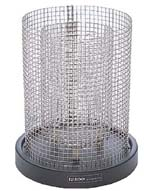

Faraday Ice Pail and Shield Application

This application illustrates the "charging of objects by electrostatic induction" part of the Faraday Ice Pail Experiment in 8.02. The experiment begins with the Faraday Ice Pail
(the inner wire mesh in your experiment) isolated and over-all neutral, and the shield (the outer wire mesh in your experiment)
connected to ground. A central charge is introduced into the region of space interior to the Faraday Ice Pail by placing your "charge producer"
in this region, without touching the ice pail (orange is positive, blue is negative).
When you begin execution by pressing the Start button, the charges in the Faraday Ice Pail respond
appropriately depending on
whether they are repelled or attracted to the central charge.
You can control whether the Faraday Ice Pail and Shield are connected by a conductor or not. You do this in the experiment
by touching both with your hand simultaneously. You do it in the simulation by pressing the appropriate buttons in the right control panel.
Explore the sequence of actions that you take to leave the Faraday Ice Pail with a net charge on it without ever having touched the pail with
your charge producer. This is the process of charging by induction.
|